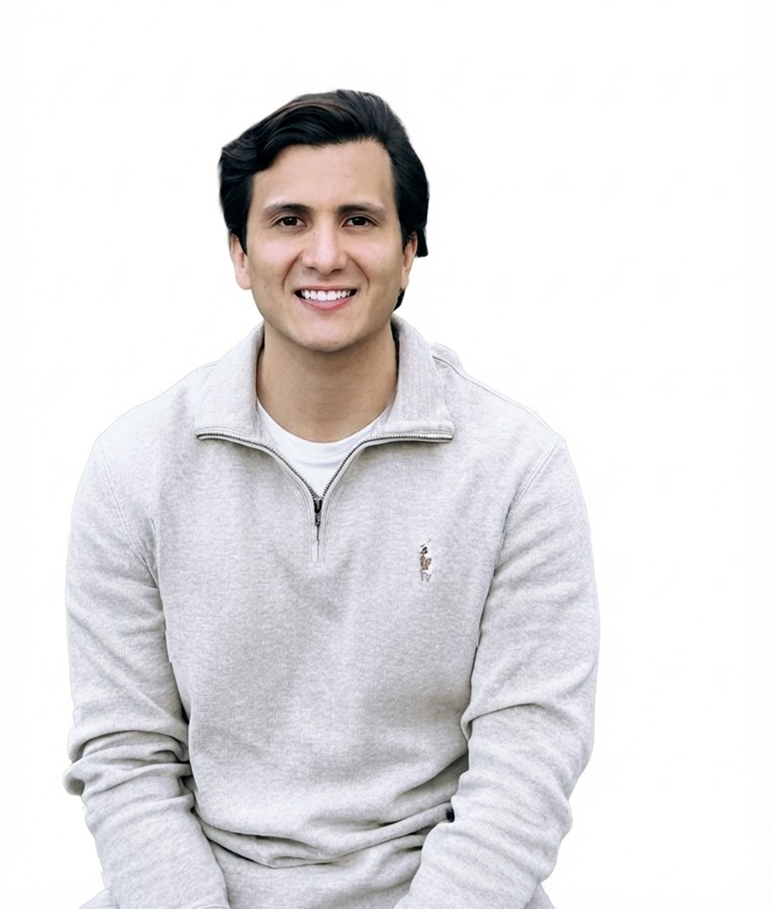

Diseño y Prototipado
Figma, Adobe XD, Design Systems, Prototipado interactivo.
Soy diseñador UX/UI enfocado en crear experiencias digitales funcionales y accesibles, conectando las necesidades de las personas con las metas del negocio.

Mi recorrido comenzó en el área de Administración de Empresas en la Universidad de Los Andes, lo que me otorgó una base sólida para entender el funcionamiento de los negocios, analizar mercados y transformar objetivos comerciales en soluciones viables.
Al adentrarme en el diseño UX/UI encontré el equilibrio entre la estrategia de negocio y la empatía con el usuario. Mi prioridad es simplificar procesos complejos y construir interfaces intuitivas con un impacto positivo.
Figma, Adobe XD, Design Systems, Prototipado interactivo.
Entrevistas, Pruebas de usabilidad, Mapas de empatía, User Personas.
Arquitectura de información, Wireframing, Benchmarking, UX Writing.